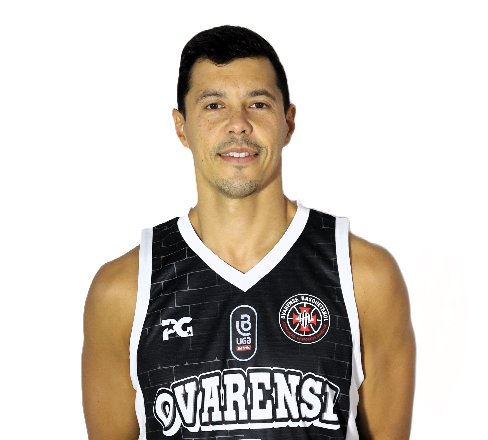
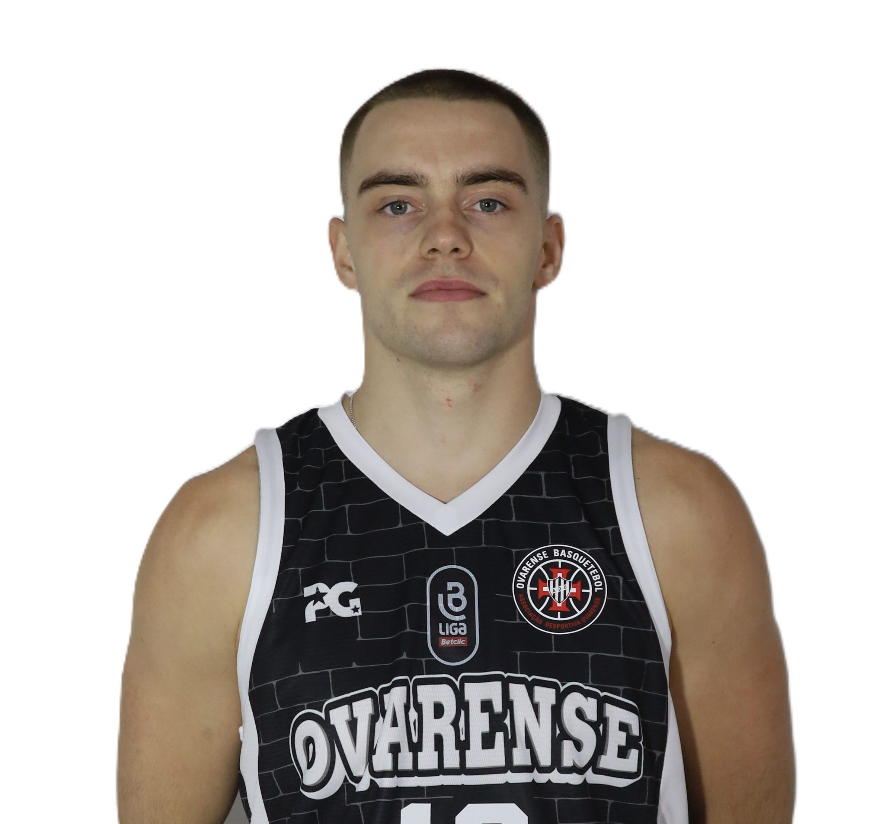
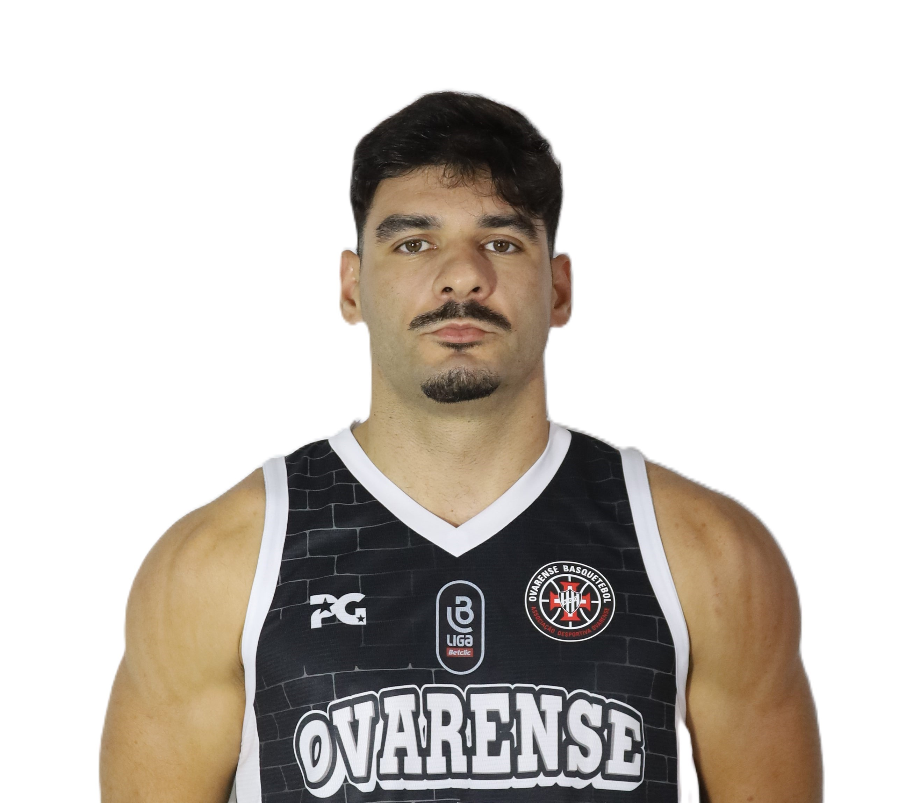
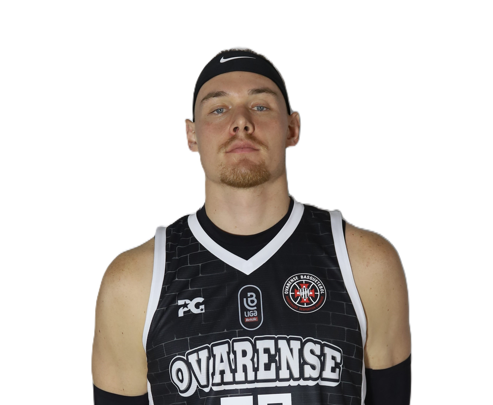
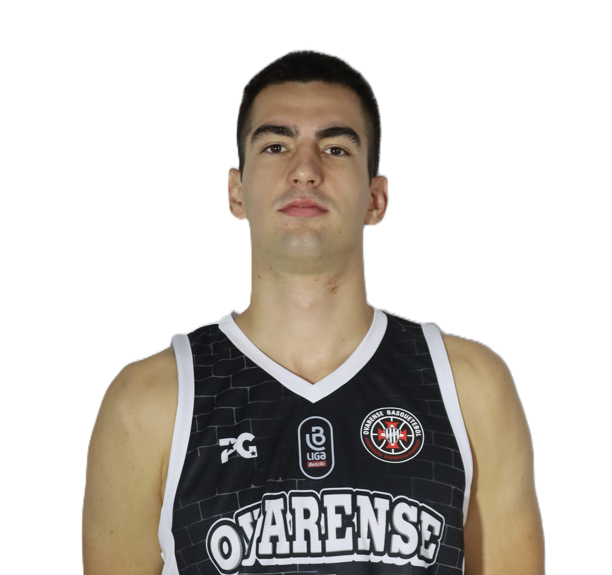
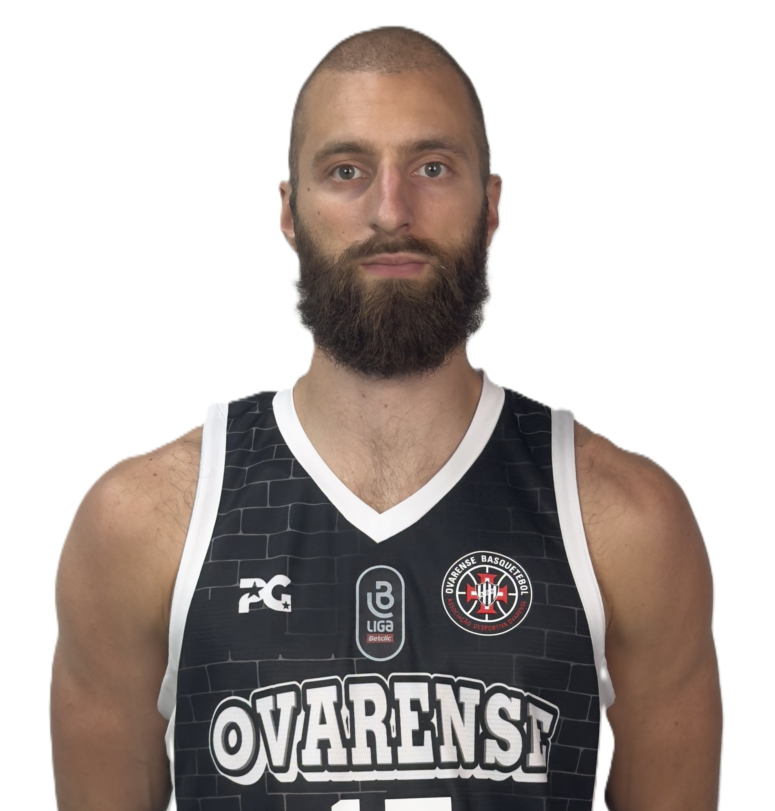

AD Ovarense
Opponent Game Plan - ADO

Team Identity vs League
| Metric | Team | League Avg | Rank | Delta |
|---|---|---|---|---|
| Pace | 77 | 79.3 | 11 | -2.3 |
| OffRtg | 105.5 | 107.2 | 7 | -1.7 |
| DefRtg | 101.3 | 107.1 | 3 | -5.7 |
| NetRtg | 4.2 | 0.1 | 4 | 4.1 |
| AST/G | 18.4 | 18.4 | 6 | 0 |
| TOV% | 18.8 | 18.6 | 8 | 0.2 |
| ORB% | 31.8 | 31.5 | 5 | 0.3 |
| PF/G | 21.6 | 21 | 7 | 0.6 |
| FT Rate | 31.4 | 35.1 | 11 | -3.8 |
| 3PA Rate | 42.3 | 40.9 | 4 | 1.4 |
How They Play
Tempo
Below-average pace; they are more comfortable when the game stays organized in the half court.
Ball Movement
Ball movement is close to league average; they can share it but are not purely pass-first.
Offensive Glass
Offensive rebounding is around league average; box-outs matter but this is not their main edge.
Turnovers
Turnover profile is close to league average; pressure helps, but it is not the whole plan.
Physicality
Foul profile sits near league average; physicality is part of the game, but not their defining trait.
Shot Mix
Perimeter volume is close to league average; shot mix alone does not define them.
Game Plan in 4 Keys
- Control the rhythm: they are more comfortable in a controlled half-court game, so do not let them play cleanly into structure.
- Know the first reference: J. Heath JR is a movement shooter, and the plan should start with taking away his comfort.
- Closeout discipline matters: G. Teixeira, J. Heath JR are the first perimeter names you cannot lose in help situations.
Scout Team Emphasis
Matchups to rehearse
G. Teixeira, J. Heath JR, N. Morais
Primary area
Above the Break 3
Recognition lineup
J. Heath JR | J. Jenkins | J. Stormo | M. Monteiro | R. Soeiro
Primary Threats
| Player | Threat Profile | 3PA | 3P% | 3PA Rate | Preferred Area | Defensive Cue |
|---|---|---|---|---|---|---|
 | Closeout | Preferred Area | 56 | 41.1% | 52.8% | Above the Break 3 | Top closeout |
? J. Heath JR | Closeout | Preferred Area | 139 | 37.4% | 49.6% | Above the Break 3 | Top closeout |
 | Closeout | 48 | 35.4% | 90.6% | Above the Break 3 | Top closeout |
 | Closeout | Volume 3PT | Preferred Area | 71 | 32.4% | 46.7% | Above the Break 3 | Top closeout |
 | Volume 3PT | Preferred Area | 102 | 29.4% | 78.5% | Above the Break 3 | Contest volume |
 | Volume 3PT | Preferred Area | 77 | 29.9% | 47.2% | Above the Break 3 | Contest volume |
 | Volume 3PT | Preferred Area | 48 | 12.5% | 24.0% | Restricted Area | Wall off paint |
 | Preferred Area | Restricted Area | Wall off paint | |||
 | Preferred Area | Restricted Area | Wall off paint |
Supporting Player Context
Key Players
| Player | Mpg | Ppg | 3PA | 3P% | Main Area | Role | Defensive Cue |
|---|---|---|---|---|---|---|---|
? J. Heath JR | 26.9 | 16.5 | 139 | 37.4% | Above the Break 3 | movement shooter | Gap and recover |
| 26.0 | 11.5 | 48 | 12.5% | Restricted Area | paint finisher | Wall off paint |
| 23.4 | 8.1 | 77 | 29.9% | Above the Break 3 | bench spacer | Gap and recover |
R. Soeiro | 21.0 | 5.7 | 102 | 29.4% | Above the Break 3 | bench spacer | Gap and recover |
J. Stormo | 27.3 | 11.3 | 1 | 0.0% | Restricted Area | paint finisher | Wall off paint |
I. Pavicevic | 18.5 | 5.7 | 28 | 21.4% | Restricted Area | paint finisher | Wall off paint |
Scouting Notes
Scouting Notes
Offense
- The main offensive references are J. Heath JR and J. Jenkins; load the scouting plan into those names first.
Perimeter Shooting
- Priority closeouts start with G. Teixeira, J. Heath JR, and N. Morais; do not lose them in help-and-recover situations.
- Some perimeter volume comes from R. Soeiro and R. Woods; contest, but do not over-help into secondary advantages.
Scoring Areas
- Their offense naturally flows toward Above the Break 3; protect that area early in possessions.
- Several players have clear comfort zones, especially J. Stormo, J. Heath JR, and J. Jenkins; force them away from preferred areas.
Units
- Most-used lineup to rehearse first: J. Heath JR | J. Jenkins | J. Stormo | M. Monteiro | R. Soeiro.
- Secondary lineup to recognize: I. Pavicevic | J. Heath JR | J. Stormo | R. Soeiro | R. Woods.
- Recognize the main duo/trio combinations: J. Heath JR | J. Jenkins and J. Heath JR | J. Jenkins | R. Woods.
Defensive Emphasis
- Offensive rebounding is around league average; box-outs matter but this is not their main edge.
- Do not lose G. Teixeira and J. Heath JR in help-and-recover situations.
Priority Closeouts
Priority Closeouts
| Player | 3PA | 3P% | 3PA Rate | Pts/Shot | Defensive Cue |
|---|---|---|---|---|---|
| 56 | 41.1% | 52.8% | 1.0 | Gap and recover |
? J. Heath JR | 139 | 37.4% | 49.6% | 1.1 | Gap and recover |
N. Morais | 48 | 35.4% | 90.6% | 1.0 | Gap and recover |
M. Monteiro | 71 | 32.4% | 46.7% | 1.0 | Gap and recover |
Volume, Lower Efficiency
Volume, Lower Efficiency
| Player | 3PA | 3P% | Pts/Shot | Defensive Cue |
|---|---|---|---|---|
R. Soeiro | 102 | 29.4% | 0.9 | Gap and recover |
| 77 | 29.9% | 0.9 | Gap and recover |
M. Monteiro | 71 | 32.4% | 1.0 | Gap and recover |
| 48 | 12.5% | 1.0 | Wall off paint |
Preferred Scoring Areas
Preferred Scoring Areas
| Player | Area | Zone Share | FG% | Pts/Shot | Defensive Cue |
|---|---|---|---|---|---|
J. Stormo | Restricted Area | 68.9% | 70.3% | 1.4 | Wall off paint |
? J. Heath JR | Above the Break 3 | 32.5% | 35.2% | 1.1 | Gap and recover |
| Restricted Area | 42.0% | 73.8% | 1.5 | Wall off paint |
R. Soeiro | Above the Break 3 | 50.0% | 35.4% | 1.1 | Gap and recover |
| Above the Break 3 | 39.3% | 32.8% | 1.0 | Gap and recover |
M. Monteiro | Above the Break 3 | 39.5% | 35.0% | 1.1 | Gap and recover |
| Above the Break 3 | 45.3% | 39.6% | 1.2 | Gap and recover |
I. Pavicevic | Restricted Area | 44.4% | 70.5% | 1.4 | Wall off paint |
Team Shot Map Summary
Team Shot Map Summary
| Area | Attempts | FG% | Pts/Shot | Zone Share |
|---|---|---|---|---|
| Above the Break 3 | 456 | 31.6% | 0.9 | 31.4% |
| Restricted Area | 432 | 65.7% | 1.3 | 29.8% |
| Paint Non-RA | 275 | 42.9% | 0.9 | 19.0% |
| Mid-Range | 130 | 40.8% | 0.8 | 9.0% |
| Corner 3 Left | 94 | 28.7% | 0.9 | 6.5% |
Lineups to Prepare For
Lineups to Prepare For
| Category | Lineup | Minutes | Pts For/40 | Pts Allowed/40 | Net/40 |
|---|---|---|---|---|---|
| Base lineup | J. Heath JR | J. Jenkins | J. Stormo | M. Monteiro | R. Soeiro | 35.5 | 81.2 | 95.8 | -14.7 |
| Rotation lineup | I. Pavicevic | J. Heath JR | J. Stormo | R. Soeiro | R. Woods | 31.0 | 76.1 | 80.0 | -3.9 |
Roster
Roster
| Player | Position | Height Cm | Games | Mpg | Ppg | Rpg | Apg | Spg | Tov Pg | Bpg |
|---|---|---|---|---|---|---|---|---|---|---|
? J. Heath JR | 22 | 26.9 | 16.5 | 3.6 | 1.7 | 0.7 | 1.8 | 0.2 | ||
| 22 | 26.0 | 11.5 | 5.8 | 1.9 | 0.7 | 2.0 | 0.4 | ||
| 21 | 23.4 | 8.1 | 2.9 | 3.7 | 0.8 | 1.5 | 0.0 | ||
R. Soeiro | 22 | 21.0 | 5.7 | 2.6 | 0.6 | 0.7 | 0.5 | 0.1 | ||
J. Stormo | 16 | 27.3 | 11.3 | 8.9 | 2.1 | 0.3 | 1.7 | 0.6 | ||
I. Pavicevic | 22 | 18.5 | 5.7 | 4.6 | 0.7 | 0.2 | 1.1 | 0.3 | ||
M. Monteiro | 22 | 18.1 | 9.2 | 1.7 | 3.9 | 0.7 | 1.9 | 0.0 | ||
| 22 | 16.3 | 6.7 | 3.1 | 3.0 | 0.8 | 2.3 | 0.1 | ||
J. Silva | 20 | 15.0 | 4.5 | 3.6 | 0.6 | 0.5 | 1.2 | 0.9 | ||
 | 12 | 18.9 | 3.9 | 3.2 | 1.4 | 0.7 | 0.8 | 0.4 | ||
N. Morais | 22 | 6.5 | 3.1 | 0.4 | 0.3 | 0.1 | 0.2 | 0.0 |
Duos / Trios to Recognize
Duos / Trios to Recognize
| Type | Players | Minutes | Pts For/40 | Pts Allowed/40 | Net/40 |
|---|---|---|---|---|---|
| duo | J. Heath JR | J. Jenkins | 391.0 | 82.7 | 80.8 | 1.8 |
| trio | J. Heath JR | J. Jenkins | R. Woods | 209.6 | 82.3 | 71.8 | 10.5 |
| duo | G. Teixeira | M. Monteiro | 71.3 | 85.3 | 64.5 | 20.8 |
| duo | N. Morais | T. Finke | 47.7 | 83.0 | 62.9 | 20.1 |